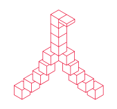

学部4年生の卒業研究・卒業制作の中間発表をパネル展示で行います。
7.13 Sat
9:30~17:30
7.14 Sun
9:30~16:30
PLACE 8-410,廊下
卒業研究中間発表
パネル展示
作品展示
"モノやコト"のデザインはどう学ぶの？
インダストリアルデザイン専攻領域の科目の特徴や受験相談まで、専任教員が質問にお答えします。
7.13 Sat
10:30~12:00
15:30~17:30
7.14 Sun
10:30~12:00
15:30~16:30
PLACE 8-409
進学相談コーナー
進学相談
2024年度前期の授業課題作品が学年ごとに展示されます。
7.13 Sat
終日
7.14 Sun
終日
PLACE 8-409,410
授業作品展示
作品展示
2024年度卒業研究中間報告会 / 講評会
インダストリアルデザイン専攻領域における卒業研究は、どんなテーマについて取り組んでいるのだろう、その進捗について学生らがプレゼンテーションを行います。
7.13 Sat
13:20~15:00
7.14 Sun
13:20~15:00
PLACE 8-409
インダストリアル・
デザイン・レビュー
講演
大学の工房を使って
モノづくりをしてみよう！
インダストリアルデザインの中心となる”モノづくり”、その楽しさを体験できるワークショップです。
7.13 Sat
10:00-13:00
14:00-17:00
7.14 Sun
10:00-13:00
14:00-16:00
PLACE 7-105
モノづくりワークショップ
体験授業/ワークショップ
この先、
インダストリアルデザイン。
